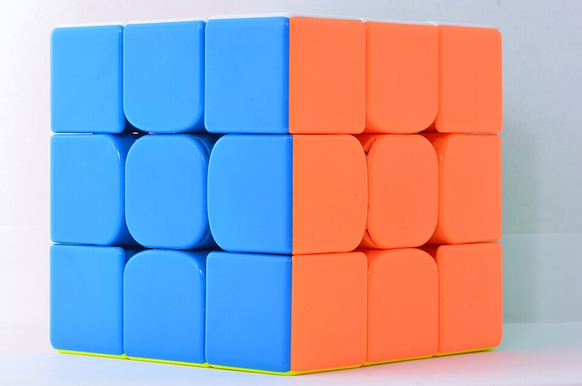

Practice your way
Algorithm Database and Customizable Trainers
Explore organized algorithms by step and case, with clear explanations that help you understand when and why to use each sequence. Build custom practice sets around the moves you want to master, repeat challenging cases, and steadily turn unfamiliar algorithms into reliable habits.
- Browse algorithms by solving method, step, and case, with alternate versions side by side.
- Review notation and move-by-move explanations before practicing a sequence.
- Create focused drills, repeat difficult cases, and track which algorithms need more work.